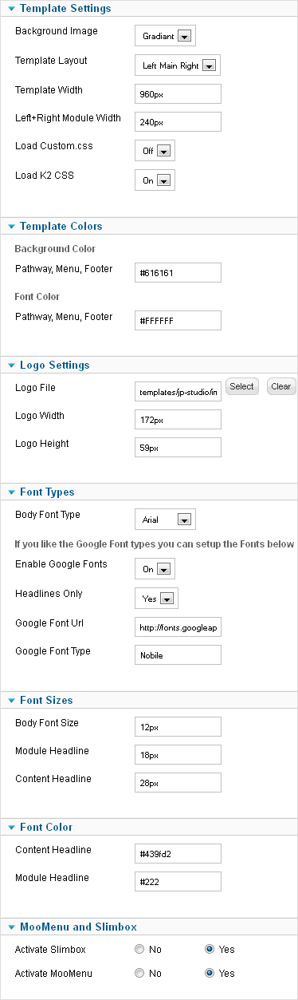
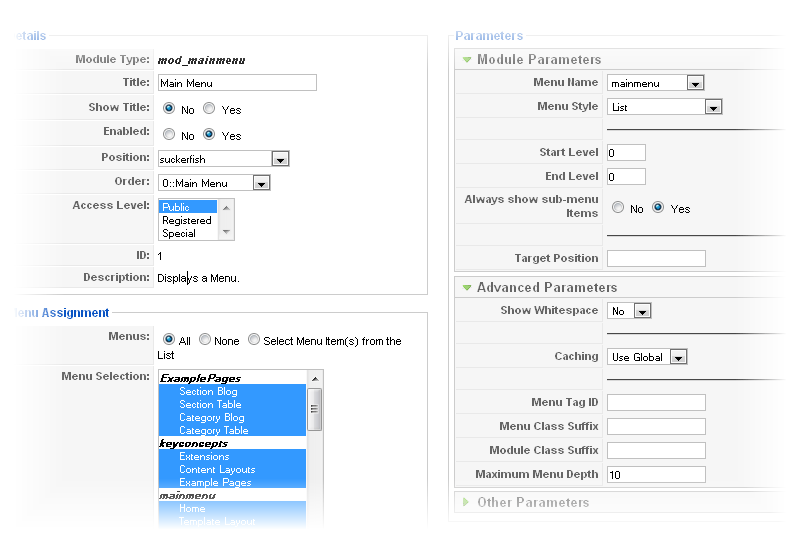
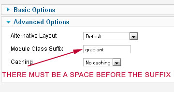
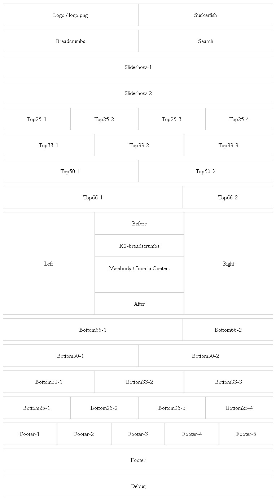

Joomla Template: JP- Industry
- Provider:
- www.joomlaplates.com
- Template Date:
- 08/2012
- Source File(s) Format:
- Photoshop CS+
- HTML/CSS type:
- HTML5/ CSS 2.1&CSS3
- Joomla Compatibility:
- 2.5 only
Welcome to this small readme file and thanks for using one of Joomlaplates.com Joomla Templates. The following documentation will help you to install, setup and maintain the template and its file(s). If you have further questions, problems or if you need support feel free to contact us. Just fill out the contact form at our website here.
Read and follow the three steps below to install and activate your new template. After the successfull installation and activation read on and learn more about the setup and the different options provided by the template.
First of all you have to download the template package to your local HDD. Than extract the .zip archive. The archive includes the templates installation file (another .zip archive) plus additional files like this documentation, Photoshop source files etc. Keep in mind where you store the installation file and proceed to step 2.
Log into your Joomlas admin backend (enter http://www.yourwebsiteurl.com/administrator in your browser) and click on "Extensions -> Install/Uninstall" to access the extension manager. Hit the "Search" button, select the installation file from your HDD and hit the "Upload File & Install" button. Wait a moment and you are done. Proceed to step 3 to learn more about the activation and setup.
Your new template is installed now but inactive. To activate it click on "Extensions -> Template Manager". A list of all installed templates appears. Select your new template and hit the "default" button in the upper right corner. Your template is now installed and active and you can start to set it up by following the next steps in this document
Comfortable Template Configuration from Joomla Backend Template Parameters.

You can select different pre definied backgrounds here. But you have always the option to load your custom background. Therefore select "custom" and edit the /css/background/custom-bg.css
Left-Main-Right / Left-Right-Main / Main-Left-Right
Please insert your prefered Template width in pixel or percent. If you change the basic width ( 960px) you have to change the slideshow module width too.
Edit the width of the left and right module in pixel only!
For easy updating your template. You dont need to customize the complete template CSS files, please insert your custom CSS styles at the > css / custom.css and select "yes"
If you want to use the K2 Compontent with our K2 Template you have to load the K2 CSS too.
This option is only for the pathway, active menu and footer background. Insert your color code in HEX ( #FF0000)
Upload your logo image file with Joomla media browser and point them here to the relative path. For example: Joomla Root/images/your_logo.jpg
please make sure that you have insert the right "height" and "width" from your logo file. Otherwise the menu container has some gaps.
This option is only for the pathway, active menu and footer font color. Please make sure that you dont use the same color above.
Select your Font type: Arial, Tahoma, Verdana or Times News Roman
If you enable this switch you override the selected Font above "Body Font Type"
If you select the "Headlines Only" the Theme will only use the Google Font for the headlines ( h3, h2). Please select "no" if you want to use the Google Font for your complete website and body Font.
Insert here the Google Font Url which you want to use. Please insert the http address only without any special chars.
Insert the Google Font Type only without any special characters
Insert here the Font Size in pixel only ( 12px, 14px and so on)
Insert your color code in HEX, like ( #FF0000). This color selection is not for the Footer modules available
Here you can deactivate the native integrated Javascripts if you have some problems with compatibility.
The template comes with an moduleposition called "suckerfish".
Make sure that the module is published on all home- and subpages and that no other module is published on the "suckerfish" module position.


You have three options for module colors: ( only left and right modules)
1.) gradiant
2.) black
3.) color ( this one is set by yourself at the Template Parameters:
A small video tutorial of setting up a custom Module in joomla 1.6
setup custom modules. Joomla allows you to add your own modules with your own text/HTML content very easily. We use such custom modules on the templates demo site to outline the different module positions. If you want to add your own log into your admin backend and click on "extensions->module manager". Hit the "new" icon in the upper right corner and select as module type "custom HTML".
The setup screen of your new module appears. Add a name, select the module position where you want to display your content (take a look at the "module map" above) and add your content into the editor text box at the bottom of the setup screen. You can add texts, images, links and any other HTML elements. Save your module and publish it.

The template comes with a nice and simple "Lightbox" script. Means you can add images or external sites which opens in a nice box overlay while the background becomes dark.
For example this code:
<a href="bigversion.jpg" rel="lightbox" title="A sample title"><img src="smallversion.jpg" alt="image" /></a>
shows one image (smallversion.jpg) and if the user click on it the link target (bigversion.jpg) will open up in the lightbox.
The important thing is the rel="lightbox" code. If you add it to a link somewhere on your website the link"href" target will open up in a lightbox.